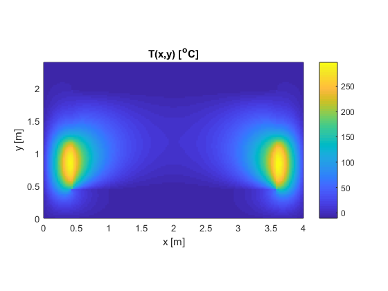
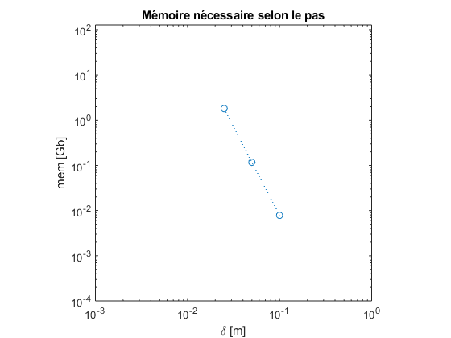
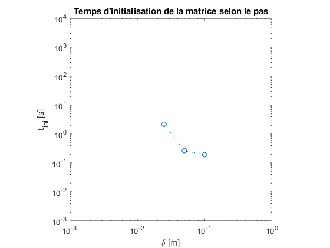
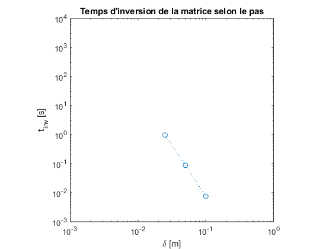
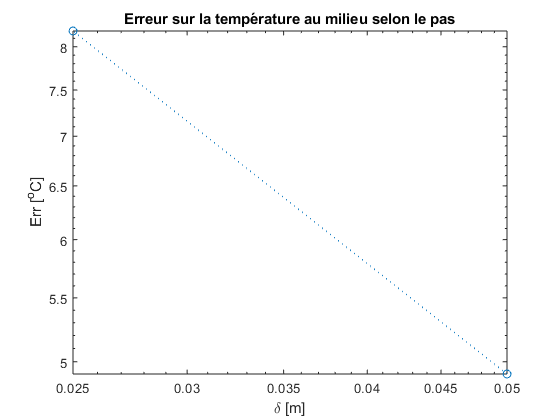

Contents
clear all
clc
Ta=-10;
Lx=4;
Ly=2.4;
Lm=0.4;
km=0.85;
h=20;
ka=0.024;
d_ar=[];tini_ar=[];tinv_ar=[];mem_ar=[];Tm_ar=[];tempMileu=[];
for fact=100e-2 * [1 1/2 1/4]
d=0.1*fact;
d_ar=[d_ar d];
Nx=round(Lx/d)+1;
Ny=round(Ly/d)+1;
Nm=round(Lm/d)+1;
tic
Initialisation de la source de chaleur et de la conductivité thermique
S=zeros(Ny,Nx); k=zeros(Ny,Nx);
for i=1:Ny
y=(i-1)*d;
for j=1:Nx
x=(j-1)*d;
dL=0.1;
q=1e4;
if (x<=Lm)&&(y<=Ly/3+Lm)&&(y>Lm)
S(i,j)=q*exp(-((x-Lm)/dL).^2);
elseif (x>=(Lx-Lm))&&(y<=Ly/3+Lm)&&(y>Lm)
S(i,j)=q*exp(-((Lx-Lm-x)/dL).^2);
else
S(i,j)=0;
end
if (x<=Lm)||(x>=(Lx-Lm))||(y<=Lm)||(y>=(Ly-Lm))
k(i,j)=km;
else
k(i,j)=ka;
end
end
end
Construction de la matrice des coefficients
M=sparse(zeros(Nx*Ny,Nx*Ny));
b=zeros(Nx*Ny,1);
for i=1:Ny
for j=1:Nx
index=(i-1)*Nx+j;
if (i==1) & (j~=1)& (j~=Nx)
pl = index;
pc = index; M(pl,pc)=3+2*d*h/k(i,j);
pc=index+1*Nx; M(pl,pc)=-4;
pc=index+2*Nx; M(pl,pc)=1;
b(index)=2*d*h*Ta/k(i,j);
test{i,j} = 'ext';
elseif (i==Ny) & (j~=1)& (j~=Nx)
pl = index;
pc = index; M(pl,pc)=3+2*d*h/k(i,j);
pc=index-1*Nx; M(pl,pc)=-4;
pc=index-2*Nx; M(pl,pc)=1;
b(index)=2*d*h*Ta/k(i,j);
test{i,j} = 'ext';
elseif (j==1)& (i~=1)& (i~=Ny)
pl = index;
pc = index; M(pl,pc)=3+2*d*h/k(i,j);
pc=index+1; M(pl,pc)=-4;
pc=index+2; M(pl,pc)=1;
b(index)=2*d*h*Ta/k(i,j);
test{i,j} = 'ext';
elseif (j==Nx)& (i~=1)& (i~=Ny)
pl = index;
pc = index;M(pl,pc)=3+2*d*h/k(i,j);
pc=index-1;M(pl,pc)=-4;
pc=index-2;M(pl,pc)=1;
b(index)=2*d*h*Ta/k(i,j);
test{i,j} = 'ext';
elseif (i==1)&&(j==1)
pl = index;
pc = index; M(pl,pc)=3+2*d*h/k(i,j);
pc=index+1 + 1*Nx; M(pl,pc)=-4;
pc=index+2 + 2*Nx; M(pl,pc)=1;
b(index)=2*d*h*Ta/k(i,j);
elseif (i==1)&&(j==Nx)
pl = index;
pc = index; M(pl,pc)=3+2*d*h/k(i,j);
pc=index-1 + 1*Nx; M(pl,pc)=-4;
pc=index-2 + 2*Nx; M(pl,pc)=1;
b(index)=2*d*h*Ta/k(i,j);
elseif (i==Ny)&&(j==1)
pl = index;
pc = index; M(pl,pc)=3+2*d*h/k(i,j);
pc=index+1 - 1*Nx; M(pl,pc)=-4;
pc=index+2 - 2*Nx; M(pl,pc)=1;
b(index)=2*d*h*Ta/k(i,j);
elseif (i==Ny)&&(j==Nx)
pl = index;
pc = index; M(pl,pc)=3+2*d*h/k(i,j);
pc=index-1 - 1*Nx; M(pl,pc)=-4;
pc=index-2 - 2*Nx; M(pl,pc)=1;
b(index)=2*d*h*Ta/k(i,j);
elseif (i==Nm+1)& (j>Nm+1 & j<Nx-Nm)
pl = index;
pc = index; M(pl,pc)=(3)*ka;
pc = index+1*Nx; M(pl,pc)=(-4)*ka;
pc = index+2*Nx; M(pl,pc)=ka;
pc = index-1*Nx; M(pl,pc)=-(3)*km;
pc = index-2*Nx; M(pl,pc)=-(-4)*km;
pc = index-3*Nx; M(pl,pc)=-km;
b(index)=0;
test{i,j} = 'int';
elseif (i==Ny-Nm)& (j>Nm+1 & j<Nx-Nm)
pl = index;
pc = index; M(pl,pc)=(3)*ka;
pc = index-1*Nx; M(pl,pc)=(-4)*ka;
pc = index-2*Nx; M(pl,pc)=ka;
pc = index+1*Nx; M(pl,pc)=-(3)*km;
pc = index+2*Nx; M(pl,pc)=-(-4)*km;
pc = index+3*Nx; M(pl,pc)=-km;
b(index)=0;
test{i,j} = 'int';
elseif (j==Nm+1) &(i>Nm+1 & i<Ny-Nm)
pl = index;
pc = index; M(pl,pc)=(3)*ka;
pc = index+1; M(pl,pc)=(-4)*ka;
pc = index+2; M(pl,pc)=ka;
pc = index-1; M(pl,pc)=-(3)*km;
pc = index-2; M(pl,pc)=-(-4)*km;
pc = index-3; M(pl,pc)=-km;
b(index)=0;
test{i,j} = 'int';
elseif (j==Nx-Nm) &(i>Nm+1 & i<Ny-Nm)
pl = index;
pc = index; M(pl,pc)=(3)*ka;
pc = index-1; M(pl,pc)=(-4)*ka;
pc = index-2; M(pl,pc)=ka;
pc = index+1; M(pl,pc)=-(3)*km;
pc = index+2; M(pl,pc)=-(-4)*km;
pc = index+3; M(pl,pc)=-km;
b(index)=0;
test{i,j} = 'int';
elseif (i==Nm+1)&&(j==Nm+1)
pl = index;
pc = index; M(pl,pc)=(3)*ka;
pc = index+1+1*Nx; M(pl,pc)=(-4)*ka;
pc = index+2+2*Nx; M(pl,pc)=ka;
pc = index-1-1*Nx; M(pl,pc)=-(3)*km;
pc = index-2-2*Nx; M(pl,pc)=-(-4)*km;
pc = index-3-3*Nx; M(pl,pc)=-km;
b(index)=0;
test{i,j} = 'coin';
elseif (i==Nm+1)&&(j==Nm+1)
pl = index;
pc = index; M(pl,pc)=(3)*ka;
pc = index-1+1*Nx; M(pl,pc)=(-4)*ka;
pc = index-2+2*Nx; M(pl,pc)=ka;
pc = index+1-1*Nx; M(pl,pc)=-(3)*km;
pc = index+2-2*Nx; M(pl,pc)=-(-4)*km;
pc = index+3-3*Nx; M(pl,pc)=-km;
b(index)=0;
test{i,j} = 'coin';
elseif (i==Ny-Nm)&&(j==Nm+1)
pl = index;
pc = index; M(pl,pc)=(3)*ka;
pc = index+1-1*Nx; M(pl,pc)=(-4)*ka;
pc = index+2-2*Nx; M(pl,pc)=ka;
pc = index-1+1*Nx; M(pl,pc)=-(3)*km;
pc = index-2+2*Nx; M(pl,pc)=-(-4)*km;
pc = index-3+3*Nx; M(pl,pc)=-km;
b(index)=0;
test{i,j} = 'coin';
elseif (i==Ny-Nm)&&(j==Nx-Nm)
pl = index;
pc = index; M(pl,pc)=(3)*ka;
pc = index-1-1*Nx; M(pl,pc)=(-4)*ka;
pc = index-2-2*Nx; M(pl,pc)=ka;
pc = index+1+1*Nx; M(pl,pc)=-(3)*km;
pc = index+2+2*Nx; M(pl,pc)=-(-4)*km;
pc = index+3+3*Nx; M(pl,pc)=-km;
b(index)=0;
test{i,j} = 'coin';
elseif ((i>1)&(i<Ny))&((j>1)&(j<Nx))
pl=index;
pc=index;M(pl,pc)=-4;
pc=(i-1)*Nx+j-1;M(pl,pc)=1;
pc=(i-1)*Nx+j+1;M(pl,pc)=1;
pc=(i-2)*Nx+j;M(pl,pc)=1;
pc=(i)*Nx+j;M(pl,pc)=1;
b(pl)=-d^2*S(i,j)/k(i,j);
test{i,j} = '';
else
display('Erreur dans la définition de la matrice de coefficients');
disp(i)
disp(j)
end
end
M = sparse(M);
end
tini_ar=[tini_ar toc];
tic
[L,U]=lu(M);T=U\(L\b);
tinv_ar=[tinv_ar toc];
mem_ar=[mem_ar 8*(Nx*Ny)^2];
Delta = sqrt(sqrt(8./mem_ar)*Lx*Ly);
Tr=reshape(T,Nx,Ny)';
Tm_ar=[Tm_ar Tr(round(Ly/d/2+1),round(Lx/d/2+1))];
ErrTemp=abs(Tm_ar(1:end-1)-Tm_ar(2:1:end));
end
Question 1
fprintf('La température au milieu est %.0f C \n',Tm_ar(end))
fprintf('L''erreur sur la température est de %.0f C \n',ErrTemp(end))
figure(3)
h=pcolor((0:d:Lx),(0:d:Ly),Tr);set(h,'LineStyle','none')
colorbar
xlabel('x [m]'); ylabel('y [m]'); title('T(x,y) [^oC]')
axis equal
axis tight
La température au milieu est 8 C
L'erreur sur la température est de 3 C

Question 2
figure(4)
loglog(d_ar,mem_ar/1024^3,':o')
axis([1e-3 1 1e-4 128])
axis square
xlabel('\delta [m]')
ylabel('mem [Gb]')
title('Mémoire nécessaire selon le pas')
figure(5)
loglog(d_ar,tini_ar,':o')
axis([1e-3 1 1e-3 10000])
axis square
xlabel('\delta [m]')
ylabel('t_{ini} [s]')
title('Temps d''initialisation de la matrice selon le pas')
figure(6)
loglog(d_ar,tinv_ar,':o')
axis([1e-3 1 1e-3 10000])
axis square
xlabel('\delta [m]')
ylabel('t_{inv} [s]')
title('Temps d''inversion de la matrice selon le pas')
figure(7)
loglog(d_ar,Tm_ar,':o')
axis tight
xlabel('\delta [m]')
ylabel('Err [^oC]')
title('Erreur sur la température au milieu selon le pas')
poly_mem = polyfit(log(d_ar),log(mem_ar/1024^3),1);
poly_ini = polyfit(log(d_ar),log(tini_ar),1);
poly_inv = polyfit(log(d_ar),log(tinv_ar),1);
poly_err = polyfit(log(d_ar),log(Tm_ar),1);
fprintf('Les coéfficients pour la mémoire nécessaire sont P_mem = %.2f et A_mem = %.2f \n',poly_mem(1),poly_mem(2))
fprintf('Les coéfficients pour le temps d''initialisation sont P_ini = %.2f et A_ini = %.2f \n',poly_ini(1),poly_ini(2))
fprintf('Les coéfficients pour le temps d''inversion sont P_inv = %.2f et A_inv = %.2f \n',poly_inv(1),poly_inv(2))
fprintf('Les coéfficients pour l''erreur sur la température au milieu sont P_err = %.2f et A_err = %.2f \n',poly_err(1),poly_err(2))
Warning: Negative data ignored
Les coéfficients pour la mémoire nécessaire sont P_mem = -3.93 et A_mem = -13.90
Les coéfficients pour le temps d'initialisation sont P_ini = -1.75 et A_ini = -5.97
Les coéfficients pour le temps d'inversion sont P_inv = -3.50 et A_inv = -12.94
Les coéfficients pour l'erreur sur la température au milieu sont P_err = -0.35 et A_err = 0.71
   
Question 3
delta_min =sqrt(sqrt(8/(128e9))*Lx*Ly);
fprintf('Le pas de discrétisation minimal avec 128 Gb de RAM est delta = %.4f \n',delta_min)
Le pas de discrétisation minimal avec 128 Gb de RAM est delta = 0.0087